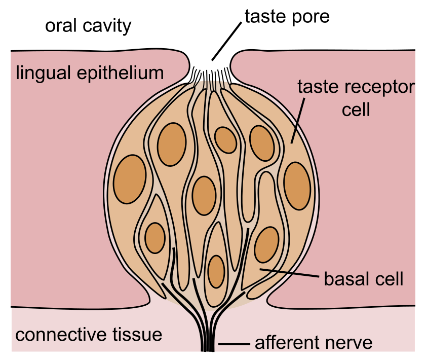
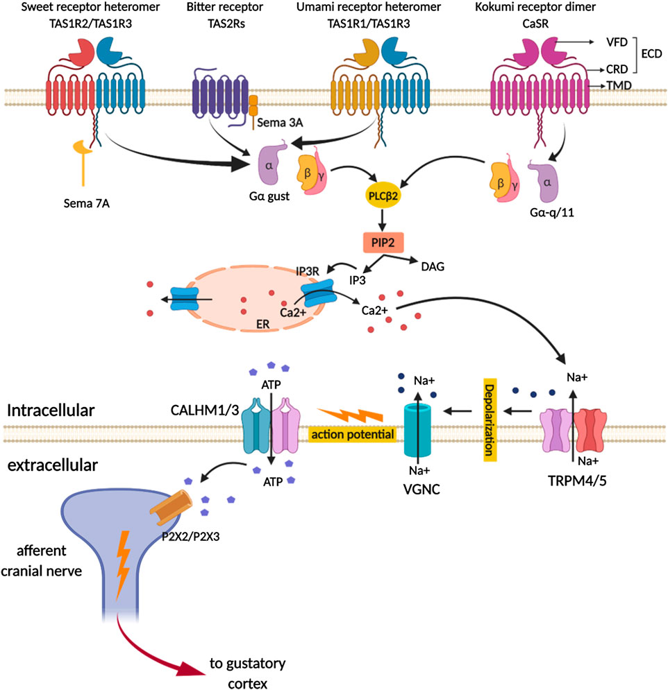
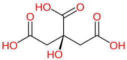
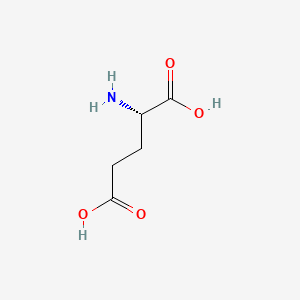
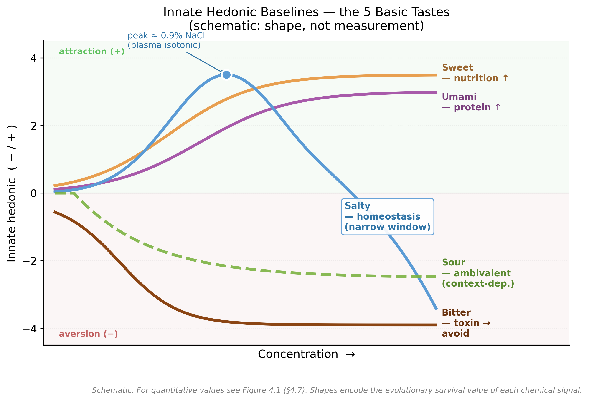
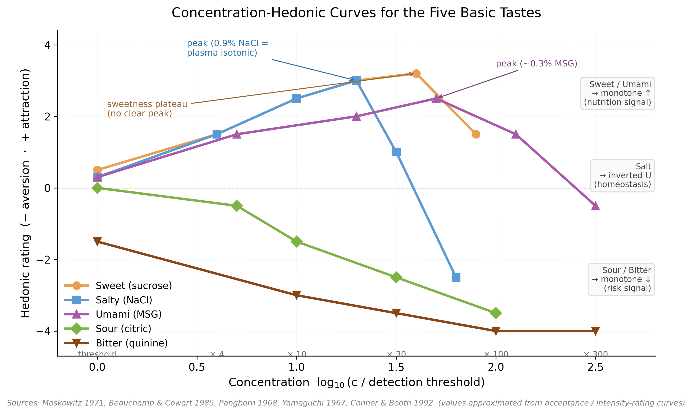

맛의 원리
청자: 생물학을 조금 아는 공대 출신 + 과학·기술 호기심이 깊은 분
맛은 오감에 의존하지만,
"맛있다·맛없다"는 미각이 압도적이다
후각·시각·체감 등 나머지 감각은 호불호의 미세 조정. 본 세미나는 미각의 분자 → 세포 → 신경 → 평가 회로가 어떻게 "맛"을 만드는지 끝까지 따라가고, 마지막엔 직접 실험해 본다.
※ 후각은 flavor에 큰 역할을 하지만, 미각 메커니즘 자체에 집중하기 위해 의도적으로 제외한다.
분자에서 출발해 행동에 도달한다
부록 A–E — 한식 시너지 · 오이 TAS2R 개체차 · 미뢰 turnover · 쓴맛=독 · 글루탐산 역설
들어가며 — 맛이란 무엇인가?
우리가 "맛"이라 부르는 건 사실 flavor
| 감각 | flavor에의 기여 |
|---|---|
| 미각 (taste) | 5대 기본맛 — 단·짠·신·쓴·감칠 |
| 후각 (smell) | 휘발성 향 분자 — flavor의 큰 부분 |
| 체성감각 | 점도·온도·매움 (chemesthesis) |
| 시각 | 색·형태·신선도 단서 |
| 청각 | 씹는 소리·바삭함 |
- 후각 = 호불호의 미세 조정 + flavor의 풍부함
- 본 세미나는 미각만 다룬다 (후각 의도적 제외)
이 모두에 분자·세포·신경 회로 답이 있다
+ 글루탐산은 화학적으로 산인데 왜 신맛이 아니라 감칠일까? (부록 E)
분자에서 출발해 행동에 도달
혀에서 뇌까지

| Papilla | 위치 | 미뢰 | 기능 |
|---|---|---|---|
| Filiform | 표면 대부분 | 0 | 마찰·grip (미각X) |
| Fungiform | 앞 2/3 | 1~5 | 첫 식별·빠른 평가 |
| Foliate | 옆 후방 | 수십 | 분쇄 중 평가 |
| Circumvallate | 뒤 V자 | 250~수천 | 마지막 검사·쓴맛↑ |

| Type | 별명 | 역할 |
|---|---|---|
| I | glia-like | 지지·이온 항상성 |
| II | receptor | 단·쓴·감칠 (GPCR) |
| III | presynaptic | 신 (전통 시냅스) |
| IV | basal/stem | 줄기세포 — 분화 source |
분자의 화학적 성격이 회로 복잡도를 결정
| 검출 분자 | 1차 수용체 | 회로 형태 | 단계 | 출력 |
|---|---|---|---|---|
| 다양한 organic (단당·아미노산·알칼로이드) | GPCR (T1R/T2R) | cascade + channel synapse | ~8 | ATP |
| H⁺ (proton) — 신맛 | OTOP1 (이온채널) | 산성화 + 전통 시냅스 | ~5 | 5-HT |
| Na⁺ — 저농도 짠맛 | ENaC (이온채널) | 직접 탈분극 | ~1–2 | (미완) |

- GDP (인산 2개) = "off" 상태
- GTP (인산 3개) = "on" 상태 (에너지 충전)
| 단계 | 증폭 | 메커니즘 |
|---|---|---|
| GPCR→G protein | ×10–100 | GTPase cycle |
| PLCβ2→IP₃ | ×수백 | 효소 1개가 PIP₂ 다수 분해 |
| IP₃→Ca²⁺ | ×1000+ | ER 농축 Ca²⁺ 폭발 |
| Ca²⁺→TRPM5 | ×수십 | 다수 채널 동시 |
| CALHM→ATP | ×수백 | 메가포어 누출 |
KO 검증: gustducin·TRPM5·CALHM1·P2X2/3 KO 마우스 모두 단·쓴·감칠 응답 소실.
- Epithelial origin — 있는 부품으로 일하는 진화
- 속도 — vesicle fusion보다 ~10× 빠름
- 에너지 효율 — 재합성·재충전 사이클 없음
- graded 신호 — 더 강한 자극 → 더 많은 ATP
- 연료 풍부 — ATP는 universal currency
뇌는 박스 내용이 아니라 발신 주소를 본다
| 세포 (발신지) | 수용체 | 출력 분자 | 목적지 (수신지) |
|---|---|---|---|
| 단맛 세포 | T1R2/T1R3 | ATP | 단맛 fiber → NTS·insula 단맛 영역 |
| 쓴맛 세포 | T2R | ATP | 쓴맛 fiber → 쓴맛 영역 |
| 감칠 세포 | T1R1/T1R3 | ATP | 감칠 fiber → 감칠 영역 |
| 신 세포 | OTOP1 | 5-HT | 신 fiber → 신 영역 |
| 짠 세포 | ENaC | ? | 짠 fiber → 짠 영역 |
5대 기본맛 — 4대에서 5대로
글루탐산을 분리 — うま味 umami.
학계 반응은 차가웠다. "다른 맛의 조합 아닐까?" 100년에 걸친 검증 끝에 분자생물학이 답했다.
| 1. 지각 독립성 | ✓ gLMS 매칭 |
| 2. 전용 수용체 | ✓ T1R1/T1R3 |
| 3. 전용 신경 경로 | ✓ chorda tympani |
| 4. 생물학적 의의 | ✓ 단백질·아미노산 신호 |
| Modality | 본유 hedonic | 자극 분자 | 수용체 | 세포 | 진화 의미 |
|---|---|---|---|---|---|
| 단 | + (강) | sucrose·인공감미료 | T1R2/T1R3 (Class C) | II | 영양·탄수화물 |
| 짠 | + (0.9% 최대) | NaCl | ENaC (이온채널) | (논쟁) | 미네랄·체액 |
| 신 | 양가 (맥락) | citric·lactic·acetic | OTOP1 (proton) | III | 익은 과일/부패 |
| 쓴 | − (강) | quinine·caffeine 25+ | T2R 25종 (Class A) | II | 식물 독 회피 |
| 감칠 | + (강) | Glu·IMP·GMP | T1R1/T1R3 (Class C) | II | 단백질·아미노산 |
- 자연 당류 sucrose, glucose, fructose, lactose, maltose
- 당알코올 xylitol, erythritol, sorbitol
- 인공 감미료 aspartame(200×), saccharin(300×), sucralose(600×)
- 단백질 감미료 brazzein, monellin, thaumatin (수백~수천 배)
glucose + fructose → sucrose
거의 모든 자연 단맛은 결국 광합성의 산물. 하나의 수용체(T1R2/T1R3)가 다양한 분자에 응답하는 비밀은 VFT(Venus Flytrap) 도메인.
├─ CRD — Cysteine-Rich (신호 도관)
├─ TMD — 7 막관통 helix (GPCR 본체)
└─ C-tail — G-protein 결합
AH-B-X 모델 (Shallenberger 1967, Kier 1972) — 분자 구조만으로 단맛 예측:
└── X (X = 소수성 그룹)
이 삼각형이 T1R2 VFT 내벽 잔기(Ser144·Tyr103·Asp142·Glu302 + Phe35/186)와 맞물려야 단맛 ON. Sucrose K_d ≈ 50 mM (약한 결합).
| 단맛 분자 클래스 | 결합 부위 |
|---|---|
| 자연 당류 | T1R2 VFT cleft (주) |
| 합성 감미료 (aspartame 등) | T1R2 VFT (당과 같은 자리) |
| Cyclamate, NHDC | T1R3 TMD pocket ← 다른 위치 |
| 단백질 감미료 (thaumatin) | T1R3 ATD 외부 표면 |
| Lactisole (차단제) | T1R3 TMD allosteric |
짠맛 최대 쾌감 ≈ 0.9%
바닷물 ≈ 3.5% (포유류 거부)
| 양이온 | 짠맛 | 비고 |
|---|---|---|
| Na⁺ | 표준 | 가장 추구되는 양이온 |
| Li⁺ | ≈ Na⁺ | ENaC 구별 못 함 |
| K⁺ | 짠+쓴 | 저나트륨 소금의 단점 |
음이온도 영향: NaCl > NaBr > Na아세테이트. Cl⁻이 가장 깨끗한 짠맛. 메커니즘은 ENaC 직접(§2.4.3) — 5대 중 가장 단순.

신맛 자극 = H⁺. 같은 pH라도 약산 종류에 따라 강도가 다르다 — 약산이 강산보다 더 시다 (비해리 HA가 막을 통과해 세포 안에서 추가 산성화).
| 산 | pKa₁ | 식품 |
|---|---|---|
| Citric | 3.13 | 레몬·오렌지 |
| Lactic | 3.86 | 요거트·김치 |
| Acetic | 4.76 | 식초 |
| Ascorbic (비타민 C) | 4.17 | 감귤·딸기·키위 |

| 클래스 | 예 | 식품 |
|---|---|---|
| Alkaloid | quinine·caffeine·morphine | 토닉·커피 |
| Glucosinolate | sinigrin | 브로콜리·겨자 |
| Polyphenol | tannin·catechin | 차·와인 |
| Terpenoid | cucurbitacin | 오이 끝 |
| Cardenolide | digitoxin | 디기탈리스 |

| 분자 | 식품 |
|---|---|
| L-Glutamic acid | 다시마·토마토·치즈·모유 |
| 5′-IMP (이노신산) | 가쓰오부시·멸치·고기 |
| 5′-GMP (구아닐산) | 말린 표고버섯 |
| 5′-AMP (아데닐산) | 다양 (낮음) |
단백질 안에 갇힌 Glu는 감칠맛이 안 난다 (peptide 결합). 자유 free Glu만 T1R1/T1R3가 인식. protease가 풀어주는 5가지 상황:
| 상황 | 대표 식품 |
|---|---|
| 숙성·aging | 파르메산(24개월)·잠봉·프로슈토 |
| 발효 | 간장·된장·어간장·청국장 |
| 자가소화 autolysis | 가쓰오부시·안초비 |
| 느린 가열 | 곰탕·사골국·토마토소스 |
| 외부 효소 | papain·bromelain (연육) |
- 다시마/켈프 — osmoprotectant로 축적, 100g당 ~2000–3200 mg
- 토마토 — 성숙 중 폭증 (푸른 ~40 → 빨간 ~250 mg/100g)
- 마늘·양파·버섯 — 베이스라인이 높음
↓ 세포 죽음 (도축·어획)
ATP→ADP→AMP→IMP→inosine→hypoxanthine
| 가쓰오부시 | ~700 mg/100g |
| 멸치(말린) | ~280 |
| 닭 (24–48h) | ~230 |
| 활어 회 | ≈ 0 (ATP 미분해) |
| 24–48h 숙성 생선 | ~150 ("회 하루 묵히면") |
| 건조 표고버섯 | ~150 mg/100g |
| 생 표고버섯 | ~70 (RNase 미작동) |
| 건조 모렐 | ~40 |
| 건조 포르치니 | ~10 |
- u, v = 각 분자 농도 (Glu, IMP/GMP)
- γ_IMP = 1218, γ_GMP = 2800
| 식품 | Glu | IMP | GMP |
|---|---|---|---|
| 건다시마 | 매우↑ | — | — |
| 잘 익은 토마토 | ↑ | — | — |
| 파르메산 | ↑ | — | — |
| 간장·된장 | ↑ | 낮음 | — |
| 가쓰오부시 | 약간 | 매우↑ | — |
| 건표고버섯 | 약간 | — | ↑ |
| 활어 회 | 약간 | ≈0 | — |
지방맛이 가장 유력 — 100년에 한 번, 5대 → 6대로 갈 수도.
"맛있다"의 원리

| Modality | 본유 hedonic |
|---|---|
| 단 | + (강) — 거의 단조 증가 |
| 감칠 | + (강) — 단조 증가 |
| 짠 | + 농도 의존 — 0.9% 최대 |
| 신 | 양가 — 맥락 의존 |
| 쓴 | − (강) — 단조 거부 |
| 쌍 | 식품 의미 | 효과 | 식품 예 |
|---|---|---|---|
| 단 + 짠 | 영양 강화 | 단이 더 풍부, 약한 시너지 | 소금 캐러멜·단팥 |
| 단 + 신 | 익은 과일 | 단이 신을 가림 (suppression) | 레모네이드 |
| 단 + 쓴 | 약·차 | 단이 쓴을 강하게 가림 | 다크초콜릿·약 코팅 |
| 짠 + 감칠 | 단백질·영양 | 강한 시너지 | 간장·된장·치즈 |
| 쓴 + 신 | 자연 독 | 강한 시너지 (둘 다 ↑ 거부) | (강한 거부) |
| 감칠 + 신 | 발효식품 | 균형·복합 | 김치·된장찌개 |
설탕 10% + 소금 0.1%(~17 mM) → 더 풍부·복합적 단맛. Na⁺이 K⁺ 차단으로 단맛 신호 약간 증폭 + 같은 OFC 영역 통합. 단의 단조성을 짠이 분절·강조.
단백질 + 미네랄 = 영양의 최고 신호. Na⁺이 T1R1/T1R3 affinity 강화(allosteric). 간장·된장·김치·다시·치즈가 전부 이 패턴.
화학적 중화 X — 신경 단계 mixture suppression. 풋과일(신↑단↓)=회피, 익은 과일(신↓단↑)=추구의 식별 회로.

- 단·감칠 — monotonic 증가 (영양: "더 많아도 좋다")
- 짠 — inverted-U, 0.9% peak = 혈장 등장액 (항상성: "필요량만")
- 신·쓴 — monotonic 감소 (위험: "거의 다 나쁘다")
다중 신호 가중 통합
+ 가치 함수 평가
NAc/VTA dopamine →
또 먹는다 · 추천 · 기억 강화
amygdala/insula 회피 →
뱉음 · 다음에 피함
| 시나리오 | 미각 | 결과 |
|---|---|---|
| 너무 짠 국(3%+) | ✗ | "맛없다" 동의 |
| 과발효 김치 | ✗ | "맛없다" 동의 |
| 너무 쓴 약 | ✗ | "못 먹음" |
| 균형 + 단조 | ✓ | "그저 그렇다" |
| 균형 + 풍부한 향 | ✓ | "맛있다" (갈림) |
직접 실험해 보자
- 물 (미네랄 적은 생수/정수)
- 소금 (NaCl) · 설탕 (sucrose) · 미원 (MSG)
- 식초 (acetic 5–6%)
- 육수코인 (향 + 감칠 종합) — 9번 실험용
- 종이컵·헹굼컵·계량 도구
쓴맛은 빠짐 — 추가하려면 인스턴트 커피 1/4 작은술 / 250 mL.
| 자극 | 약 | 중 | 강 |
|---|---|---|---|
| 소금 | 1 g(0.1%) | 5 g(0.5%) | 9 g(0.9%)★ |
| 설탕 | 10 g(1%) | 50 g(5%) | 100 g(10%) |
| 미원 | 0.5 g | 2 g(0.2%) | 5 g(0.5%) |
| 식초 | 15 mL | 30 mL | 50 mL |
★ 0.9% 소금 = 혈장 등장액 = 짠맛 최대 쾌감 — 이번 실험에서 직접 검증.
직접 해 본 결과 + 마무리
| # | 조합 (250 mL) | 평가 | 이론 정합 |
|---|---|---|---|
| 1 | 짠 1% + 감칠 0.1% | 맛있으나 단순·질림 | 시너지 작동, but 향 부재 → 평면적 |
| 2 | 짠 + 멸치 육수코인 | 맛있으나 조금 모자람 | 향이 거부감 제거 |
| 3 ★ | 짠 + 멸치 + MSG | 맛있음 (소면 넣으면 딱) | 짠+감칠+향 3박자 = 다시 국물 |
| 4 | 단 10% + 식초 1% | 식초 역함, 많이는 못 먹음 | 레모네이드 비율, but acetic 휘발성 |
| 5 | 설탕 + 레몬즙 | 레몬에이드 맛 | citric은 깔끔, 향이 카테고리 매핑 |
| 6 | 스테비아 + 레몬즙 | 씁쓸한 after-taste | 스테비아가 T2R도 약하게 활성 |
| 7 ★ | 스테비아 + 레몬 + MSG | "감칠을 끌어올리는 건 짠맛" | Na⁺이 T1R1/T1R3 affinity 강화 |
| 8 | 4 modality 통합 | 간 맞으나 안 끌림 | 향·비율·체감 부재 |
| 9 | 단독 자극 각각 | 설탕만 맛있음 | 단독 hedonic은 단맛만 충분 |
단 + 신 (10% + 1%) = 차선
4가지 모두 + 비율 조절 + 향 = 잠재력 최고 (음료수의 분자 backbone)
- 단독 modality는 단맛 외엔 맛이 없다
- 짠+감칠 시너지 + 향 = 보편적으로 좋아하는 패턴
- 감칠은 짠 없이는 약하다 (사용자 발견)
- acetic(휘발·sharp) vs citric(깔끔) — 향이 결정적
- 스테비아 = 약한 쓴 after-taste (T2R 부분 활성)
- 4 modality + 향 = 음료수의 분자 backbone
- 5대 기본맛은 분자생물학적으로 깔끔히 정의된다
- 단·쓴·감칠 = 같은 backbone, routing이 modality
- 짠·신 = GPCR 없이 이온 채널 직접 (가장 단순)
- "맛있다"는 단일 분자가 아닌 다층 통합
- 0.9% 짠맛처럼, 진화가 항상성과 미각을 일치시켰다
| 단 | 짠 | 신 | 쓴 | 감칠 | |
|---|---|---|---|---|---|
| 자극 | sucrose | Na⁺ | H⁺ | 25+ 분자 | Glu·IMP·GMP |
| 수용체 | T1R2/T1R3 | ENaC | OTOP1 | T2R 25종 | T1R1/T1R3 |
| 시냅스 | channel | ? | 전통 | channel | channel |
| hedonic | + | + (0.9%) | 양가 | − | + |
| 진화 의미 | 영양 | 항상성 | 익은 과일/부패 | 독 회피 | 단백질 |
미각은 수억 년의 진화가 혀에 새긴 영양·독·항상성 평가 시스템. "맛있다"는 분자→수용체→세포→신경→가치 평가 5단계 통합이 0.5초 안에 일어난 결과.
부록 — 관심 주제
| 식품 | 감칠 분자 |
|---|---|
| 다시마(곤포) | Glu (~3% free) |
| 멸치 | 5′-IMP + Glu |
| 간장 | Glu(콩 발효) + Na |
| 된장 | Glu·peptide + Na |
| 말린 표고 | 5′-GMP (γ 최대) |
이탈리아 토마토 파스타 + 파르메산 = 토마토 Glu + 치즈 Glu 시너지. "이탈리아의 감칠 = 한·일과 같은 분자 패턴". 일본 dashi = 곤포 + 가쓰오부시(Glu + IMP).
한·일의 손질법(줄기 끝 1–2 cm 자르기 + 껍질 벗기기)은 수렴된 식문화 적응.
| 변동 | 정량 |
|---|---|
| 오이 농도(부위·수확) | 100배+ |
| 사람 민감도 | 2–5배 |
| 합쳐진 인지 차이 | 수백 배 |
⚠️ Toxic Squash Syndrome — 매우 쓴 박과는 먹지 말 것. 쓴맛 거부는 진화의 방어.
세포 수명 ~8–14일 (Type III가 가장 느림). 처음 보고 Beidler & Smallman 1965.
- 항암제(5-FU·taxane) — 분열 줄기세포 손상 → dysgeusia
- 노화 · 영양 결핍(B12·아연·철) · COVID-19
| 약 | 식물 origin |
|---|---|
| Morphine·codeine | 양귀비 |
| Quinine | 신코나 (말라리아) |
| Paclitaxel(Taxol) | 주목 (항암) |
| Artemisinin | 개똥쑥 (노벨상 2015) |
인간은 quinine·caffeine·denatonium을 모두 단일 "쓴맛"으로 인지 — 어느 T2R이 켜졌는지 구분 못 함. 미묘한 차이는 동반 향·chemesthesis·학습의 몫.
| 수용체 | 측정 대상 | 맛 |
|---|---|---|
| T1R1/T1R3 | carboxylate (−COO⁻) | 감칠 (Type II) |
| OTOP1 | 외부 H⁺ | 신 (Type III) |
→ 같은 분자가 두 modality를 동시에 활성화 가능. 산성기를 갖는 것(화학)과 신맛으로 인지(외부 H⁺ 검출)는 다른 차원.
| 형태 / 식품 | pH | 미각 |
|---|---|---|
| MSG 분말 (Na salt) | ~7 | 감칠 단독 |
| 다시마 추출액 | ~6 | 감칠 우세 |
| 자유 글루탐산 결정 | ~3 | 신 + 약 감칠 |
| 토마토(생) | ~4.3 | 감칠 + 신 동시 |
| 김치 | ~4 | 감칠 + 신 + 매움 |
감사합니다 🍽
다음 식사 때 한 입 한 입 천천히 음미해 보라 —
분자가 만드는 신호, 회로가 만드는 가치, 진화가 만든 즐거움이 거기 있다.